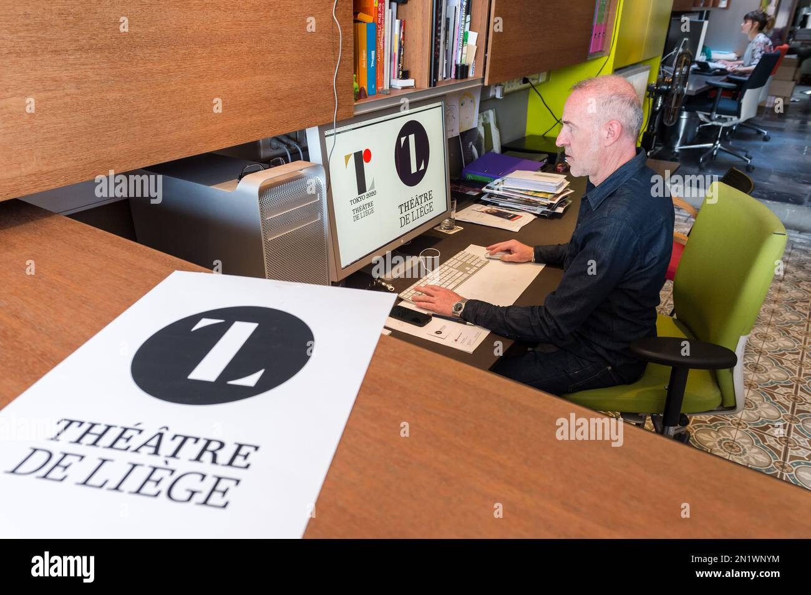

左：佐野氏の五輪エンブレム案 ／ 右：ドビー氏のリエージュ劇場ロゴ
2015年7月、日本人デザイナー佐野研二郎氏がデザインした
東京2020エンブレム（赤い丸 × 「T」）が発表されました。
しかしその直後、ベルギーのデザイナーオリビエ・ドビー氏が
「これは自分がデザインしたリエージュ劇場のロゴにそっくりだ」と告発。
「国民に支持されないロゴは大会の成功にふさわしくない」
──組織委員会は2015年9月、わずか2ヶ月で撤回を発表
05 / 16 — 新国立競技場の計画白紙撤回に続く、二度目のショックだった